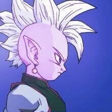

Kaio-shin

Los Kaio-shin (界王神, Kaiō-shin) o Dioses de la Creación (創造神, Sōzō-shin)[4], son un grupo de poderosos dioses pertenecientes a la especie Shin-jin que tienen como objetivo cuidar y proteger el universo, así como mantener el equilibrio junto a los Dioses de la Destrucción. Todos los Kaio-shin están enlazados al destino de los Dioses de la Destrucción de sus respectivos universos, por lo que, si todos los Kaio-shin mueren, el Dios de la Destrucción también lo hará, y viceversa.
Regresar